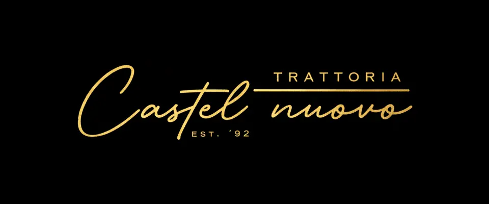
Die Treue-App für Restaurants in KlosterneuburgEssen gehen.
Beleg scannen.
Belohnt werden.
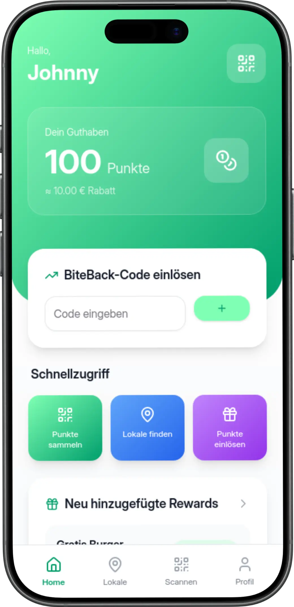
Geh in deine Lieblingslokale, sammle für jeden Euro auf deiner Rechnung einen Bite und tausch deine Bites gegen Backs: Gratis-Gerichte und Gratis-Getränke. BiteBack funktioniert wie eine digitale Stempelkarte, die in allen Partnerlokalen gleichzeitig gilt. Statt Geld bekommst du Essen und Getränke zurück, und für dich ist die App kostenlos.
Du führst ein Lokal?
Für Gastronomen →So funktioniert BiteBack
1
Rechnung scannen
Iss wie gewohnt in einem unserer Partnerlokale, zahl ganz normal und scanne danach den QR-Code auf deiner Rechnung mit der BiteBack-App.
2
Bites sammeln
Für jeden Euro bekommst du einen Bite. Alle Bites aus allen Partnerlokalen landen auf einem gemeinsamen Konto.
3
Backs einlösen
Wähle in der App einen Back aus, zum Beispiel ein Gratis-Gericht oder ein Gratis-Getränk, und lass die Einlösung vom Personal bestätigen.
Rund jedes sechste Gericht gratis
Wie viele Bites ein Back kostet, legt jedes Lokal selbst fest. Wir empfehlen unseren Partnern das Fünffache des Menüpreises. Wer zum Beispiel fünfmal ein Gericht um 17 € isst, hat 85 Bites gesammelt und bekommt das sechste Gericht gratis.
Beispiel aus der App
Steirischer Backhendlsalat
Gastwirtschaft Zum Ockermüller
Bei manchen Backs gilt eine Bedingung, etwa ein Mindestbestellwert. Das Lokal gibt sie direkt beim Back in der App an.
Partnerlokale in Klosterneuburg
In diesen Lokalen sammelst du schon Bites und löst sie ein. Schau einfach vorbei!
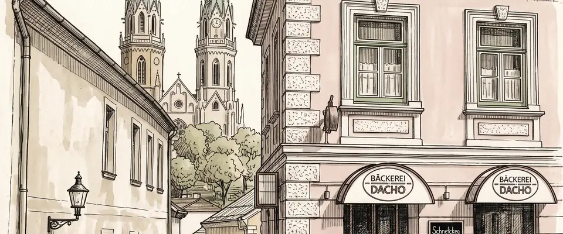
Bäckerei Dacho
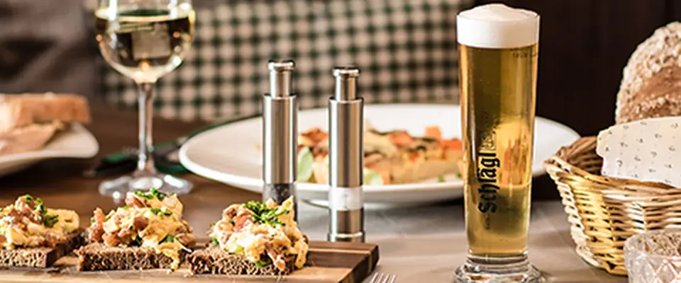
Gastwirtschaft Zum Ockermüller
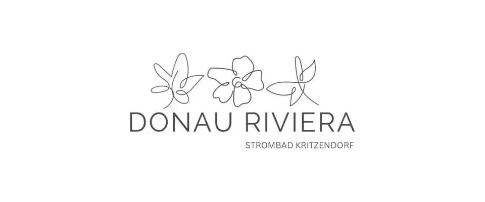
Donau Riviera Kritzendorf
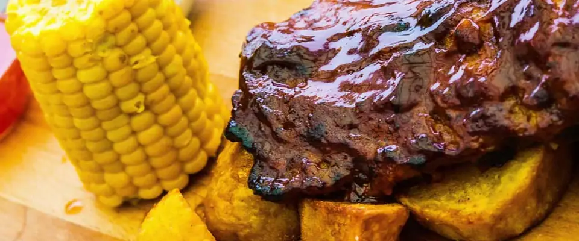
Sportsbar Happyland
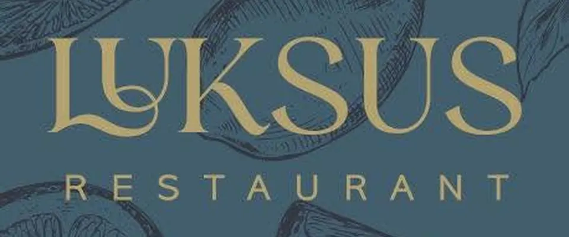
LUKSUS Restaurant
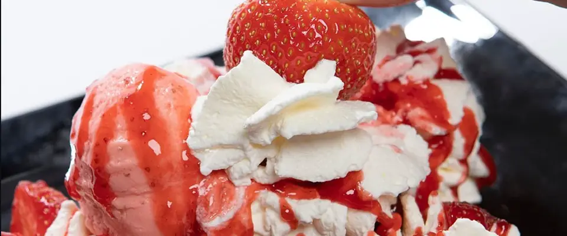
Eissalon Leonardelli
Laufend kommen neue Lokale dazu. Alle Partner mit Öffnungszeiten und Backs findest du in der App, neue Partner erkennst du dort am „Neu“-Abzeichen.
Eine digitale Stempelkarte für alle Lokale
Ein Konto für alle Lokale
Statt vieler Stempelkarten hast du ein einziges Bite-Konto, das in allen Partnerlokalen gleichzeitig gilt.
Überall einlösen
Bites aus einem Lokal kannst du in jedem anderen Partnerlokal einlösen. Du sammelst und löst ein, wo du willst.
Kostenlos
Die App kostet dich nichts, weder der Download noch das Sammeln.
Neue Lokale entdecken
Mit BiteBack findest du neue Lokale in Klosterneuburg und hast einen Grund mehr, in dein Stammlokal zu gehen.
Extra-Bites
Mit Aktionscodes gibt es Extra-Bites. Lädst du Freunde ein, bekommen sie 10 Bites geschenkt und du 5 Bites dazu.
Über uns: Zwei Gründer aus Klosterneuburg
Wir sind Georg und Philipp. Uns ist aufgefallen, dass meist nur große Ketten eigene Treue-Apps haben, und das wollten wir ändern. Seit Mai 2025 bauen wir BiteBack, weil wir finden, dass jede Mahlzeit die Gemeinschaft vor Ort stärken soll. Kleine, unabhängige Lokale sollen die Reichweite und die Stammgäste bekommen, die sie sich mit harter Arbeit verdient haben.
Georg Schättle
Co-Founder
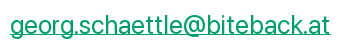
Philipp Schöller
Co-Founder
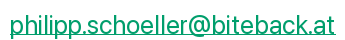
Häufige Fragen zu BiteBack
Falls dir noch etwas unklar ist, findest du hier die Antworten auf die häufigsten Fragen.
Allgemein
Was ist BiteBack?
BiteBack ist die Treue-App für Restaurants in Klosterneuburg. Für jeden Euro auf deiner Rechnung sammelst du einen Bite und tauschst deine Bites in unseren Partnerlokalen gegen Gratis-Gerichte und Gratis-Getränke.
Was kostet die App?
Nichts. BiteBack ist für Gäste komplett kostenlos.
Wo kann ich BiteBack nutzen?
In allen unseren Partnerlokalen in Klosterneuburg. In jedem davon kannst du Bites sammeln und einlösen, egal wo du sie gesammelt hast.
Ab welchem Alter kann ich mitmachen?
Ab 14 Jahren kannst du dich selbst registrieren. Für Kinder ab 7 Jahren legen die Eltern das Konto an.
Bites sammeln
Wie sammle ich Bites?
Nachdem du in einem Partnerlokal gegessen und bezahlt hast, scannst du den QR-Code auf deiner Rechnung mit der BiteBack-App. Für jeden vollen Euro bekommst du einen Bite. Trinkgeld zählt nicht dazu, weil es nicht auf dem Beleg steht.
Wie oft muss ich scannen, bis ich etwas gratis bekomme?
Wie viele Bites ein Back kostet, legt jedes Lokal selbst fest. Mit unserer Empfehlung ist rund jedes sechste Gericht gratis: Isst du fünfmal ein Gericht um 17 €, hast du 85 Bites und bekommst das sechste gratis.
Bis wann kann ich meinen Beleg scannen?
Bis zu 14 Tage nach dem Bezahlen. Am einfachsten scannst du ihn gleich am Tisch.
Kann ich mehrere Belege oder den Beleg meiner Begleitung scannen?
Jeder Beleg zählt nur einmal, und pro Lokal kannst du alle drei Stunden einen Beleg scannen. Zahlt ihr getrennt, scannt jeder seinen eigenen Beleg in seiner App.
Ich habe keinen Papierbeleg bekommen. Was nun?
Seit 1. Oktober 2026 dürfen Lokale den Beleg auch digital anbieten, zum Beispiel über einen QR-Code oder einen Link. Öffne den digitalen Beleg und scanne den QR-Code darauf. Einen Papierbeleg kannst du jederzeit verlangen.
Mein Beleg lässt sich nicht scannen. Was kann ich tun?
Tippe in der App auf „Beleg lässt sich nicht scannen?“ und schick uns ein Foto vom Beleg. Wir prüfen ihn und schreiben dir die Bites gut, meist innerhalb von 24 Stunden.
Backs einlösen
Was sind Backs?
Backs sind die Belohnungen in der App: Gerichte und Getränke, die du gegen Bites eintauschst. Jedes Lokal legt seine Backs selbst fest. Manche gelten nur zu bestimmten Zeiten oder mit einer Bedingung wie einem Mindestbestellwert, das steht direkt beim Back in der App.
Wie löse ich einen Back ein?
Sag beim Bestellen Bescheid, dass du einen Back einlösen möchtest, und wähle ihn in der App aus. Das Personal bestätigt die Einlösung mit dem PIN des Lokals.
Verfallen meine Bites?
Solange du BiteBack nutzt, nicht. Erst wenn du 12 Monate lang weder Bites sammelst noch einlöst, verfallen sie.
Kann ich Bites auszahlen lassen oder verschenken?
Nein. Bites haben keinen Geldwert und gelten nur für dein eigenes Konto.
Konto und Codes
Was ist ein BiteBack-Code?
Mit Codes bekommst du Extra-Bites. Du hast einen persönlichen Einladungscode: Gibt ihn jemand in der App ein, bekommt die neue Person 10 Bites und du 5 Bites. Dazu kommen Aktionscodes zu besonderen Anlässen. Zum Einlösen von Codes bestätigst du einmalig deine Handynummer.
Wie lösche ich mein Konto?
Jederzeit direkt in der App unter Profil.
Noch Fragen? Schreib uns an 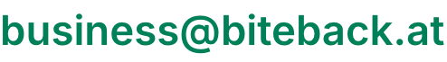
Das Treueprogramm für Restaurants: BiteBack for Partners
Du führst ein Lokal? Mit BiteBack for Partners bekommst du ein fertiges Treueprogramm für mehr Kundenbindung in der Gastronomie, ganz ohne eigenes Marketingbudget. Auf unserer Seite für Gastronomen findest du alle Vorteile und erfährst, wie du Partner wirst.
Mehr für Gastronomen →Bereit zum Sammeln?
Lade dir BiteBack jetzt kostenlos herunter, im App Store und bei Google Play.